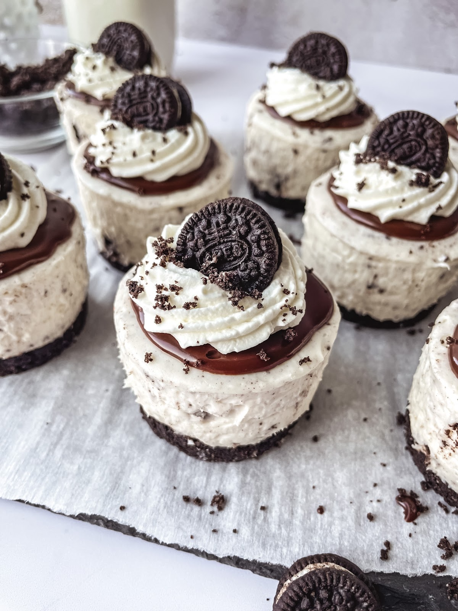

Cheesecake Oreo

La deliziosa cheesecake ma mini!
Nulla è meglio di un buon dolce per concludere un pasto e cosa mglio di una semplice cheesecake con i sempre amati biscotti oreo?
Per questa ricetta ho scelto però di preparare delle comode monoporzioni per limitare sprechi e per rendere la ricetta un po' più chic!
Ingredienti e strumenti utili (4 porzioni)
Prima di partire ad elencare gli ingedienti mi sembra cosa buona e giusta osservare che per la preparazione sono stati usati dei coppapasta di
7,5 cm di diametro e 4,5 cm di spessore
Per la base:
- Biscotti oreo 150 g
- Burro 60 g
Per la crema:
- Formaggio spalmabile fresco 125 g
- Zucchero a velo 35 g
- Panna fresca liquida 100 g
Preparazione
- Separare il biscotto dalla crema all'interno. Quindi tritare i biscotti con il burro ammorbidito in un frullatore fino ad ottenere un composto
sbriciolato e ben amalgamato. Sistemati quindi i vostri coppapasta e riempiteli con il composto, con il dorso di un cucchiaio schiccate il composto fino
a riempire bene le basi. Riponetele quindi in frigo per 30 min
- Montate con le fruste la panna con lo zucchero a velo. In un'altra ciotola versate la crema degli oreo e il formaggio spalmabile
e lavorate il tutto con le fruste per circa 1 min. Una volta volta ottenuta una crema liscia unite la panna.
- Riprendete quindi le basi dal frigo e versate la crema all'interno. Con un cucchiaio livellate la superficie.
- Frullate ora qualche oreo intero e usate il composto per ricoprire la crema
- Riponete le cheesecake in frigo per circa 8 ore, io le lascio la notte, e saranno pronte per essere gustate!